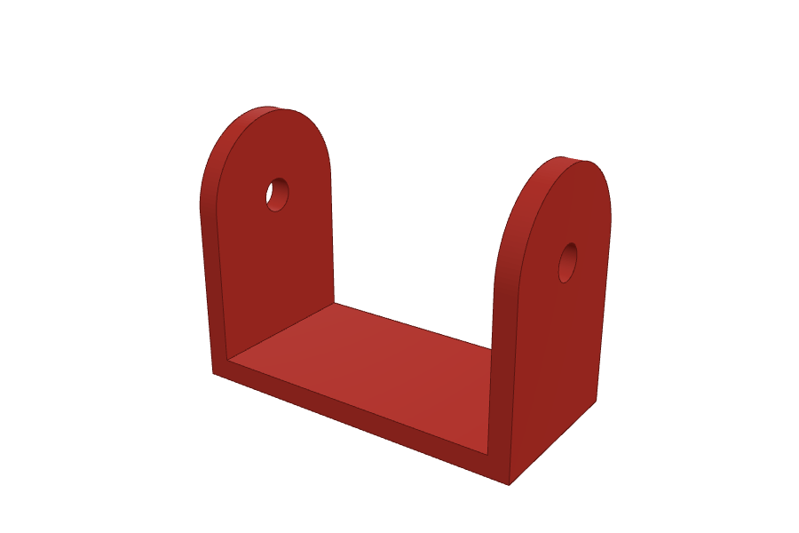
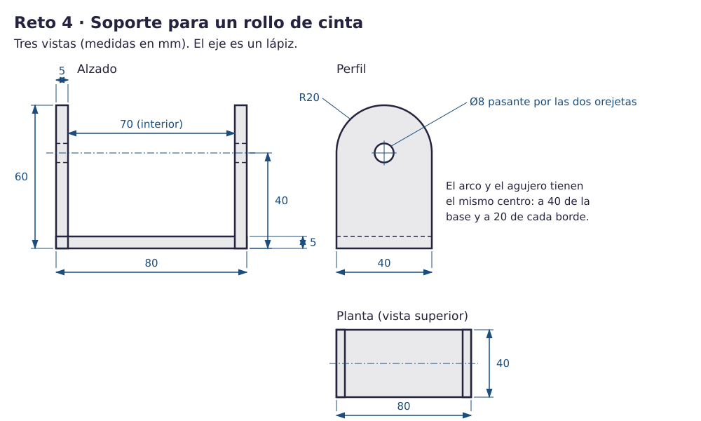
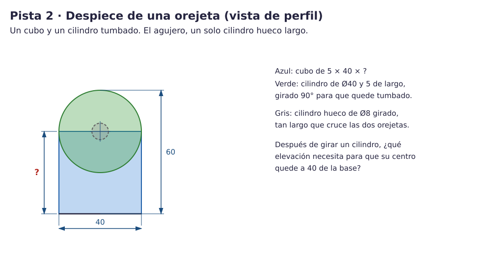

Contenido
Lo que vas a conseguir
Un soporte para un rollo de cinta adhesiva: una base y dos orejetas con la parte de arriba redonda y un agujero que las atraviesa. Un lápiz hace de eje y el rollo gira en él. Este reto no tiene Fase A: solo el plano y pistas. Es el que más se parece a la prueba corta.

Qué cuenta para la nota. El reto 4 forma parte de los Retos CAD 3D y, junto con las Fases B, es lo que hace falta para el nivel 4. Usar las pistas no baja la nota.
1. Una herramienta nueva: girar 90°
Hasta ahora todos los cilindros estaban de pie. Aquí necesitas cilindros tumbados, con el círculo mirando a los lados.
- Selecciona la forma: aparecen tres flechas curvas, una para cada forma de girar.
- Arrastra la que la tumba de lado. Mientras arrastras, mantén Mayús: el giro salta de 45 en 45°. También puedes escribir 90 en el cuadro del ángulo.
- Después de girar, la forma puede quedar hundida o flotando. Pulsa D para dejarla apoyada en el plano de trabajo y escribe otra vez su elevación.
- Compruébalo con el cubo de vistas: desde la vista DERECHA tienes que ver un círculo.
Ahora tú (sin nota). Pon un cilindro de 10 × 10 × 20 y túmbalo. ¿Cuánto mide ahora de ancho, de fondo y de alto?
Ver respuesta
20 × 10 × 10: el largo (20) pasa a ser el ancho, y el círculo de Ø10 queda de pie.
2. El plano
El plano tiene tres vistas: el alzado (de frente), el perfil (de lado) y la planta (desde arriba). Cada medida aparece en la vista donde mejor se ve: el arco y el agujero, en el perfil.

3. Construye el soporte
Crea un diseño nuevo y llámalo reto4. Tiene tres partes: la base, dos orejetas iguales y un agujero que atraviesa las dos. Empieza por la base y pon la Regla en su esquina.
Las orejetas
Pista 1 · la idea
Cada orejeta es un cubo con un cilindro tumbado encima. El centro del cilindro está justo en el borde de arriba del cubo, así que la mitad del cilindro queda dentro del cubo y la otra mitad forma el arco.
Pista 2 · el despiece

Pista 3 · los números, para comprobar
- Base: cubo de 80 × 40 × 5, con la Regla en su esquina.
- Cubos de las orejetas: 5 × 40 × 40 en (0, 0) y (75, 0).
- Cilindros: de Ø40 y 5 de alto, tumbados. Ya girados miden 5 × 40 × 40; con elevación 20 su centro queda a 40. Van en (0, 0) y (75, 0).
El agujero
Pista 1 · la idea
No hagas dos agujeros: haz uno solo, un cilindro hueco tumbado tan largo que cruce las dos orejetas. Así quedan alineados seguro y el lápiz pasa recto.
Pista 3 · los números, para comprobar
Cilindro en Hueco de Ø8 y 90 de largo, tumbado: mide 90 × 8 × 8. Elevación 36 (40 − 4) y distancias a la Regla (−5, 16): sobresale 5 por cada lado y su centro queda a 20 del borde.
Al final, selecciónalo todo y agrupa.
Piensa. ¿Cómo pondrías el soporte en la impresora?
Ver respuesta
Apoyado en la base: es la cara grande y plana, y todo crece hacia arriba sin voladizos. Los agujeros quedan tumbados, pero son pequeños (Ø8) y la impresora puede cerrar su parte de arriba sin soportes.
4. Comprueba el soporte
- Mide 80 × 40 × 60 en total.
- Desde la vista DERECHA se ve el agujero, redondo y atravesando, a la altura del centro del arco.
- Entre las orejetas quedan 70 mm.
- Todo está unido: la base toca las orejetas.
| Si te pasa esto… | Prueba esto |
|---|---|
| El cilindro se giró hacia el lado que no era | Ctrl + Z y prueba con otra flecha curva. Desde la vista DERECHA tiene que verse un círculo. |
| Después de girar, la elevación es rara | Pulsa D para bajarlo al plano y escribe otra vez la elevación. |
| El agujero solo atraviesa una orejeta | El cilindro hueco es corto: 90 de largo y en (−5, 16). |
| El arco no queda redondo arriba | El centro del cilindro tiene que coincidir con el borde de arriba del cubo: elevación 20 si mide 40. |
5. Exporta y entrega los cuatro retos
Para entregar un diseño se exporta como archivo STL, el formato que leen los programas de impresión 3D. De cada reto se entrega una sola pieza: la Fase B si la has terminado; si no, la Fase A. Repite estos pasos con reto1, reto2, reto3 y reto4:
- Abre el diseño en Tinkercad. Sin nada seleccionado, pulsa Exportar (arriba a la derecha) y elige .STL.
- El archivo se descarga con el nombre del diseño: reto1.stl, reto2.stl, reto3.stl y reto4.stl. Si no, cámbiale el nombre. Los archivos reto1_A.stl, reto2_A.stl… son tu copia de la Fase A: solo se entregan, con el nombre retoN.stl, si la Fase B no ha salido.
- Copia el enlace del diseño: es la dirección que aparece en la barra del navegador mientras lo editas.
- En Moodle, abre la tarea Retos CAD 3D, sube los cuatro archivos y pega en el texto de la entrega los cuatro enlaces y una frase que explique cómo apoyarías caja y tapa en la impresora y por qué.
Guarda bien tus cuatro archivos STL: cuando forméis los equipos, los copiarás a la carpeta del equipo.
Antes de entregar, repasa:
- Reto 1: 60 × 30 × 4 y cinco aberturas que se ven por abajo. Fase B: esquinas R5, avellanados de Ø8 y coliso.
- Reto 2: 45 entre caras, 80 de alto, fondo cerrado y TEC unido a la cara. Fase B: separador hasta 60 y ESO grabado.
- Reto 3: caja con fondo, pestaña de 45,4 × 35,4 y las dos piezas separadas. Fase B: tres compartimentos de 14, separadores hasta 20 y muesca.
- Reto 4: 80 × 40 × 60 y el agujero de Ø8 atravesando las dos orejetas.
- La frase de cómo apoyarías caja y tapa en la impresora (te ayuda la «Piensa» del reto 3).